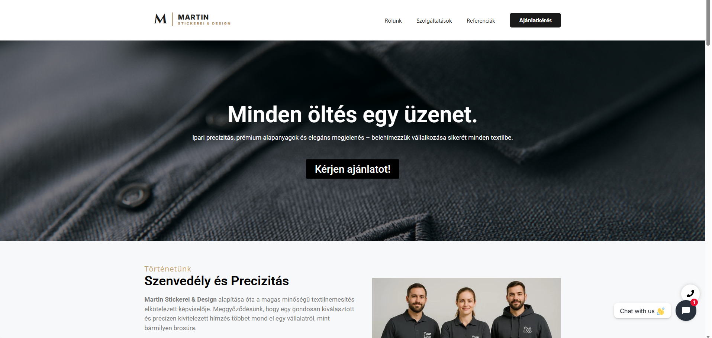

Céges weboldalMartin Stickerei & Design
Modern, reszponzív weboldal egy logóhímző vállalkozásnak, amely látványosan mutatja be a kész munkákat.
„Kiváló munkát végzett Dominik az új weboldalunkkal! Egy modern, reszponzív felületet kaptunk, ami tökéletesen bemutatja a referenciáinkat.”